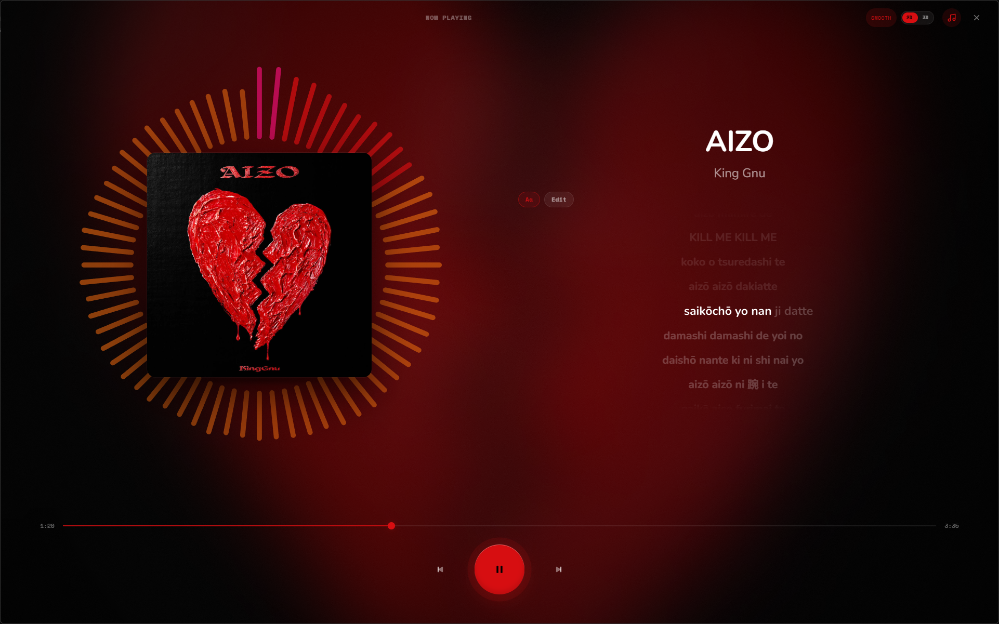

FREE · OPEN SOURCE · NO ACCOUNT
Your music, untouched.
Musik is a free desktop player for the files you already own. No ads, no subscription, no quality cap.
Windows only for now · No Mac build yet · v1.1.0



Played exactly as recorded.
Musik never resamples or compresses on the way out. A 24-bit FLAC stays a 24-bit FLAC.
MP3FLACWAVAIFFOGGOPUSAACM4AALAC
The accent follows the cover.
Whatever is playing sets the color of the whole app. Click a cover to try it on this page.
Lyrics that keep up
Synced lyrics, with romanization for songs in other alphabets.
A visualizer, 2D or 3D
A ring that follows the music, or a 3D view. One toggle switches them.
2D and 3D visualizerLast.fm scrobblingMini playerTaskbar controlsCtrl+K searchSandboxed mods
Want to change something? You can.
Themes and mods are built in. Drop a folder in and go.